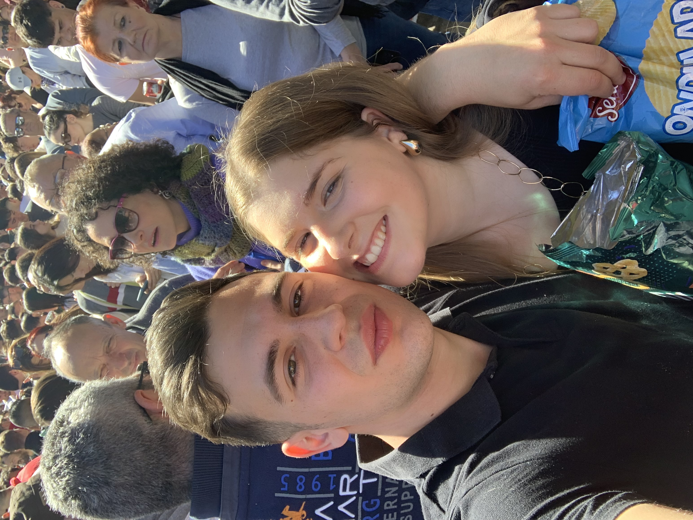
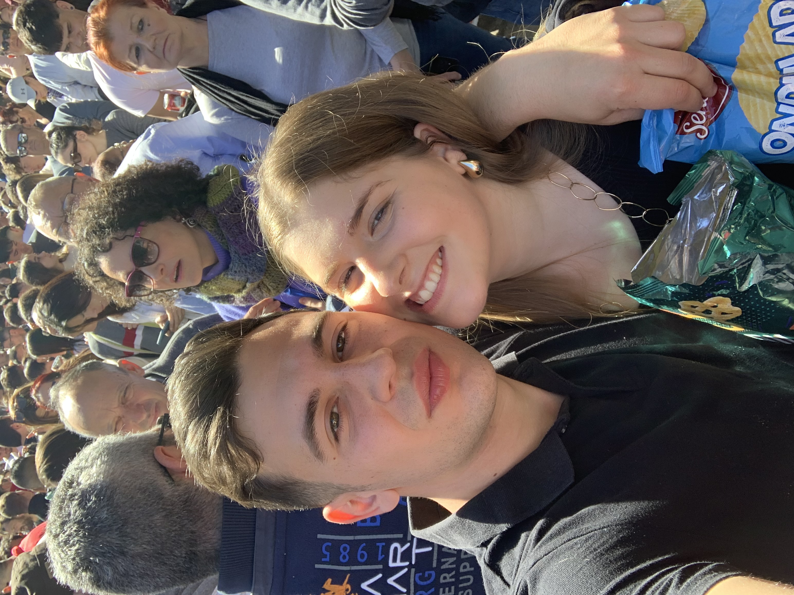
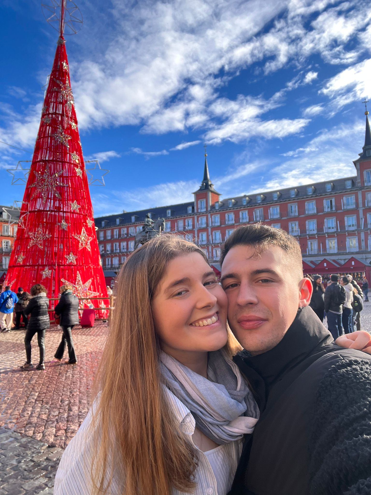
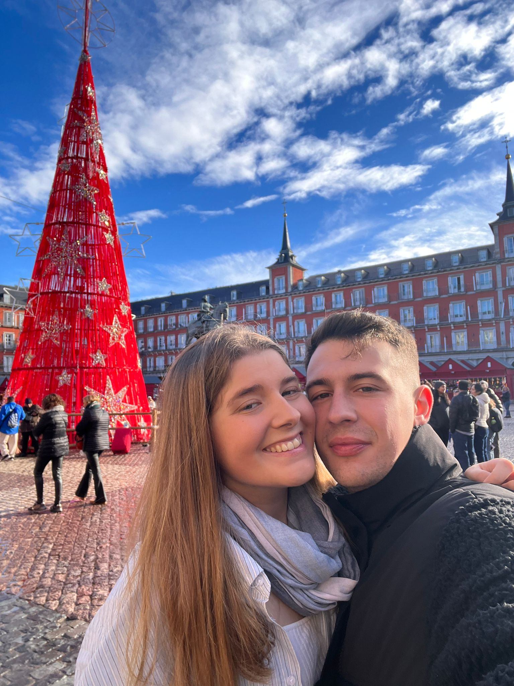
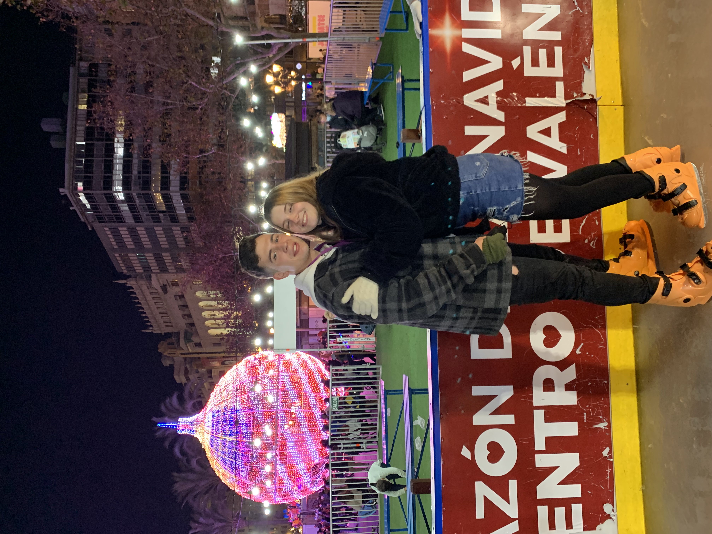
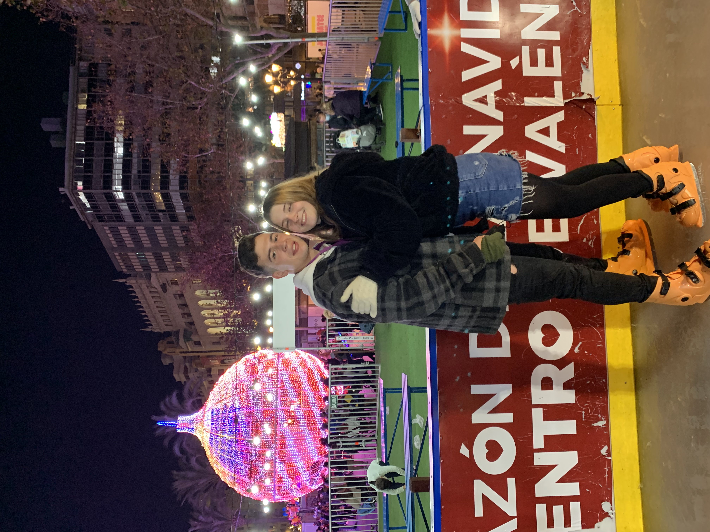

PARA MI AMOR, FELIZ SAN VALENTIN üñ§
Desde el dia que te conoci en Ollerias no me imginaba a todo lo que llegariamos. Aun a dia de hoy descubro en ti detalles que me hacen enamorarme aún más. Quiero seguir explorando el mundo contigo, hacer viajes inolvidables y crear nuevos recuerdos que nos acompañen por siempre. Estoy feliz de estar contigo porque a parte de todo el cariño que me das me ayudas a sacar siempre mi mejor version. Me emociona la idea de tener un futuro juntos y de corazon te digo que no veo mi vida sin ti. Eres lo mejor que tengo en mi vida y ojala celebrar muchos más San valetines juntos. Te amo con todo mi corazon.
 



 



 
